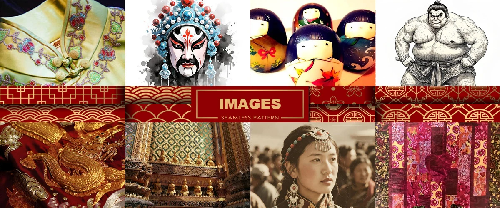
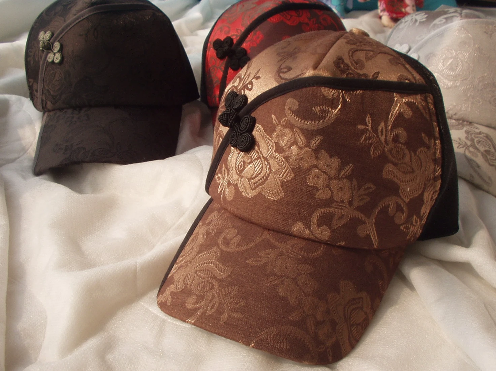
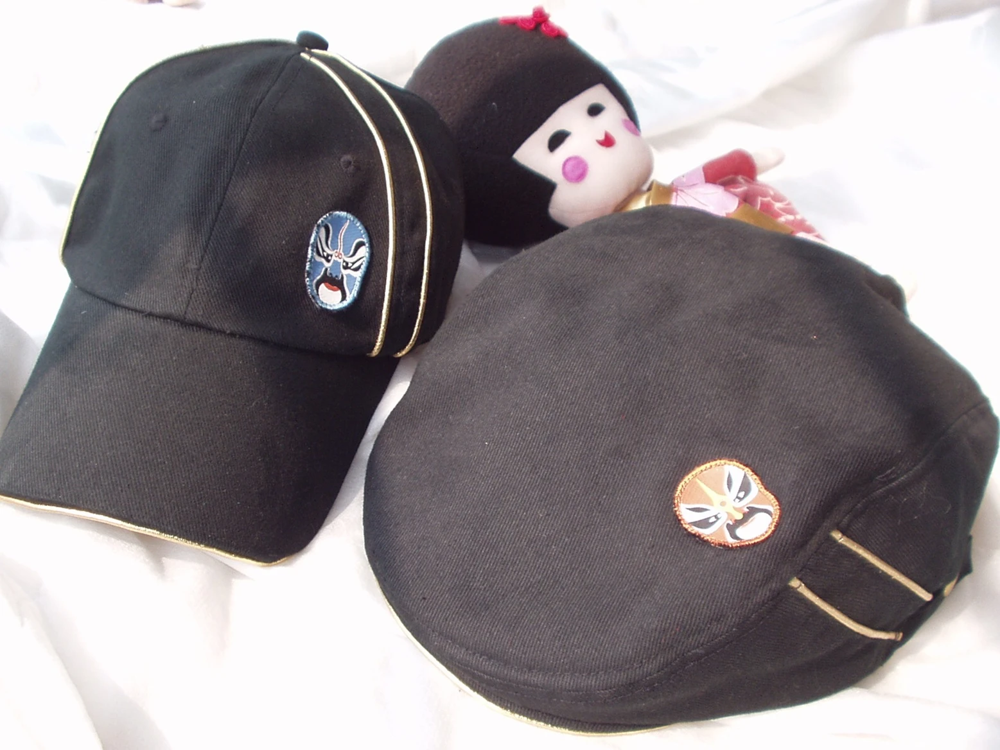
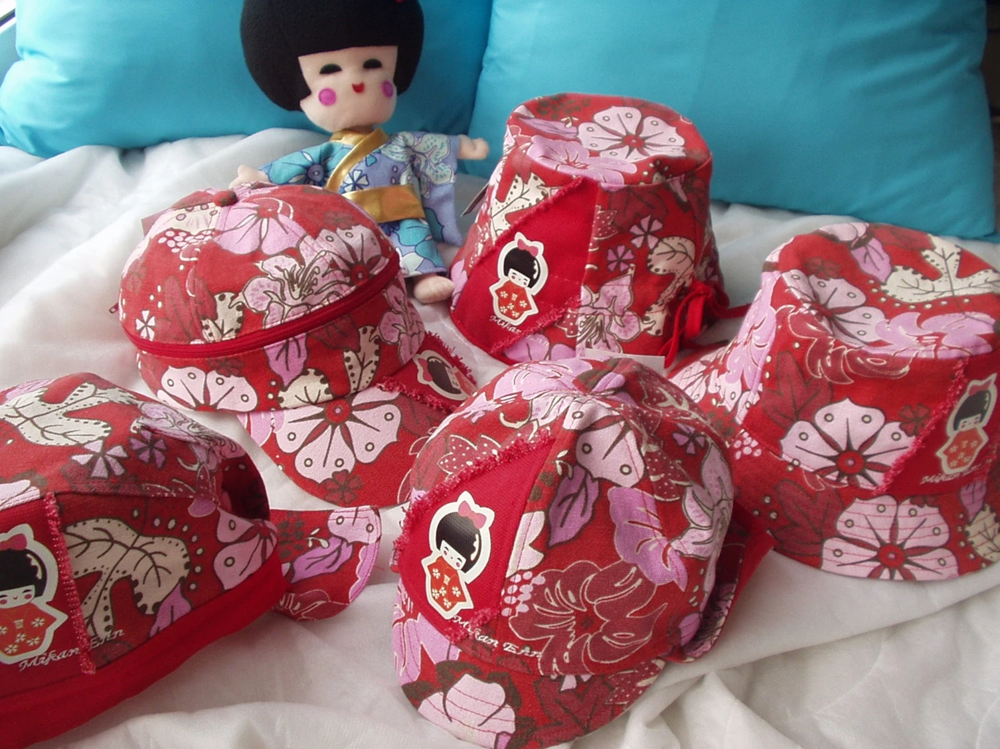
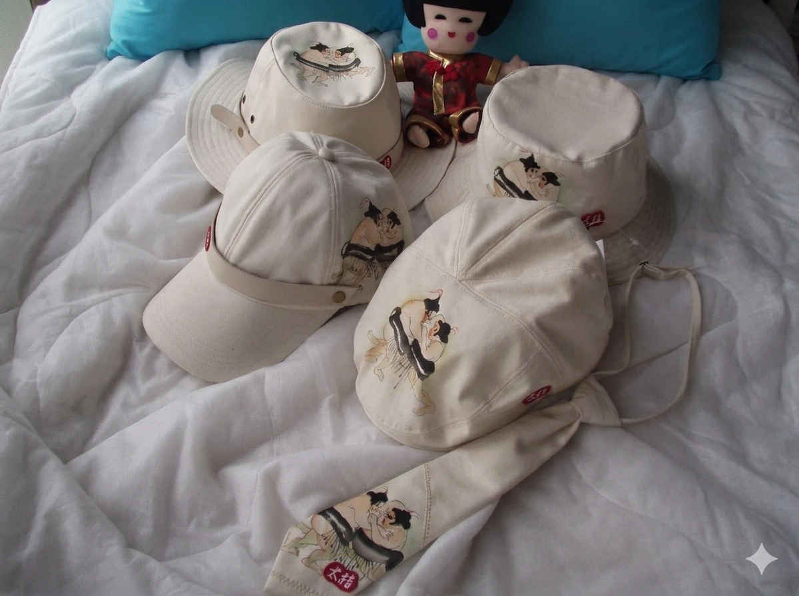
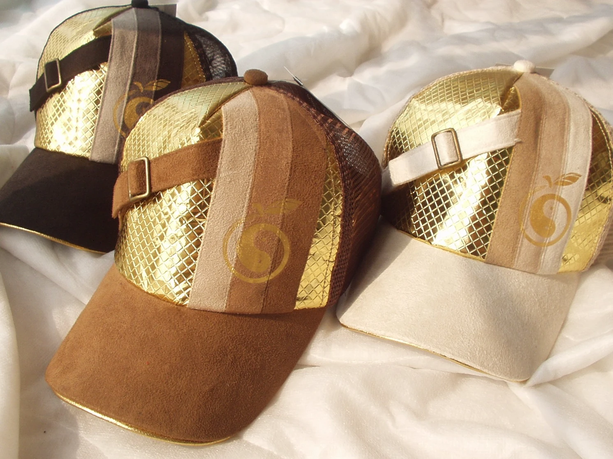
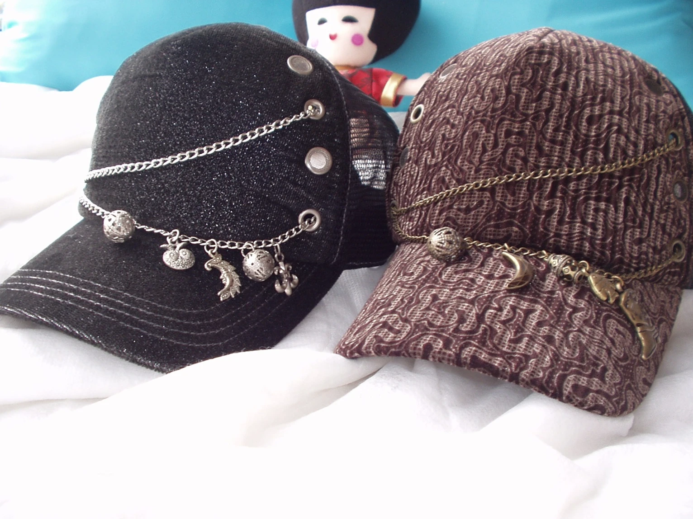
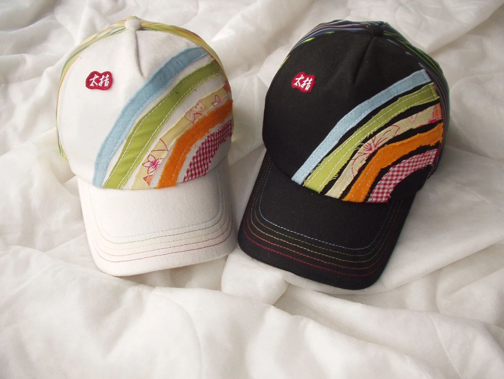

中華傳統文化風格
五千年傳承演進，古雅含蓄、對稱和諧、意境深遠、典雅莊重。

日本傳統文化風格
東瀛文化，簡約留白、侘寂之美、自然含蓄、靜謐雅致。

東南亞傳統文化風格
東南亞文化，色彩濃烈、自然熱帶、紋樣繁複、神秘奔放。

品牌設計視覺印象定義
1.中華旗袍文化藝術
旗袍線條流轉如水，勾勒東方女性的含蓄與優雅。立領與盤扣相映成趣，絲綢隱現光澤，在傳統與現代之間書寫柔美韻律。
2.中華京劇臉譜藝術
臉譜以濃烈色彩刻畫性格，紅忠黑剛白詭，各具象徵。線條誇飾而富節奏，如面具般揭示人性，將戲劇張力凝於一面之上。
3.日本人形俑
人形俑以靜謐姿態凝結時光，面容柔和而含蓄，服飾層疊精緻。其造型承載歷史記憶與禮俗精神，於無聲之中流露深遠的文化情感。
4.東瀛相撲非遺藝術
相撲以厚重身軀承載古老儀式，力與靜之間蘊藏哲學。場域如祭典，動作簡潔卻富張力，展現傳統精神與身體文化的凝練之美。
5.東南亞金絲刺繡
金絲如光，細密交織於織物之上，映照熱帶文化的華麗與神聖。紋樣多取自自然與宗教意象，層層堆疊出尊貴與莊嚴，展現手工藝術的極致細膩。
6.泰式宮宇鎏金建築
鎏金閃耀於飛簷與塔頂之間，映照陽光如神域降臨。線條繁複而優雅，融合宗教信仰與王權象徵，構築出莊嚴華麗的視覺詩篇。
7.西藏民族首飾藝術
首飾以銀與寶石構築信仰之光，色彩濃烈而神秘。紋樣多寓祝福與守護，隨身佩戴如祈願之器，映現高原文化的靈性與力量。
8.東方拼布工藝藝術
臉譜以濃烈色彩刻畫性格，紅忠黑剛白詭，各具象徵。線條誇飾而富節奏，如面具般揭示人性，將戲劇張力凝於一面之上。
視覺印象延伸之產品系列設計

Chinese Cheongsam
優雅的盤扣如點睛之筆，在交領般的流線邊緣輕輕叩響，將旗袍優雅的東方風骨，重塑為街頭律動的新視角。設計理念源於對海派旗袍美學的致敬，將華貴的絲緞織錦與經典盤扣融入帽體，在絲縷交錯間，勾勒出跨越世紀的仕女氣韻。
沈穩的古銅與玄黑色澤，映襯著繁花似錦的浮雕織紋，宛如將一段繁華的民國煙雲穿戴於身。這不只是一件配飾，更是一場關於東方柔情與現代俐落的對談，讓古老的裁剪藝術在日常行走間，依舊散發著內斂而高貴的東方芬芳。

Chinese Opera Facial Makeup
戲劇的張力在靜謐中悄然定格，將千年的京劇臉譜藝術，凝練成帽檐上躍動的精魂。設計理念源於對華夏戲曲美學的致敬，將那抹朱紅、玄黑與亮藍，以細膩的針線縫綴，在黑色的基底上譜寫一曲跨越時空的梨園當代民謠。
金色的滾邊細節如同舞臺上閃爍的鎏金光影。這不只是一件配飾，更是一場關於臉譜神韻與現代俐落的對談，讓那份屬於東方午後、靜謐而輝煌的金色禪意，於潮流律動中綻放內斂而高貴的東亞韻味。

Japan Traditional Doll
東方的靜謐在時光的長河中靜靜流淌，日本人形俑以一種溫柔而優雅的姿態，將千年的傳承凝結在這一頂頂帽子上。將人形俑融入設計，不只是裝飾，更是一種心靈的守護，也讓佩戴之人於日常之中感受歷史溫度與文化的細緻回響。
它是日常中的禪意，是沉默的陪伴，在紛擾的世界中，為你保留一份心靈的淨土。紅色布幔上的精緻圖騰，彷彿是它溫柔的歌聲，訴說著對美麗的無盡追求，也在時光流轉之中，靜靜映照內心深處的寧靜與純粹之光。

Japan Sumo Wrestling
力與美的博弈在方寸布面上靜謐展開，將東瀛相撲的剛健氣韻，化作帽檐上躍動的浮世圖景。設計理念旨在轉化傳統競技中的「力士」意象，以洗鍊的筆觸捕捉對峙瞬間的張力，平衡了武士道的威嚴與現代休閒的輕盈。
素雅的米白色底材如同土俵細砂，襯托出朱紅與墨色的文化印記。這不只是一件遮陽單品，更是一場關於平衡美學的對談，讓古老國技藝術在當代街頭卸下厚重，以謙遜而充滿生命力的姿態，延續東方文化的風骨。

Royal Gold Thread Embroidery
金絲銀線交織於斑駁的帆布，將東南亞古老的手作溫度，凝練成街頭轉角的藝術風景。設計理念旨在打破傳統與現代的邊界，將極具異域色彩的精密刺繡，點綴於率性的帽檐之上。
流動的漩渦圖騰，如同陽光在古寺金飾間的躍動，在粗獷的磨損細節襯托下，更顯靜謐而高雅。這不只是一件配飾，更是一場關於東方美學的跨時空敘事，讓古老的工藝在當代潮流的律動中，優雅地尋回日常的歸屬，並悄然喚起內心深處的文化共鳴與情感記憶。

Thai Gilded Aarchitecture
輝煌的鎏金光澤如同曼谷破曉時分的宮宇尖頂，將那份神聖而奪目的奢華，轉化為帽尖上的異域敘事。設計理念汲取自泰式傳統建築的璀璨工藝，以交織的金色網格模擬琉璃閃爍，並輔以沉穩的麂皮質感，平衡了皇室般的貴氣與街頭的率性。
側邊的帶扣如同宮殿門扉上的古老鎖鑰，鎖住一段關於繁盛與信仰的記憶。這不單是一件遮陽的配飾，更是一場流動的視覺盛宴，隨身攜帶著那份屬於東南亞午後、靜謐而輝煌的金色禪意。

Tibetan Traditional Jewelry
銀鈴與星月在帽檐間低迴輕響，將遙遠雪域的西藏首飾藝術，懸綴成都市夜色中的一抹神祕與靈動。設計理念源於對藏民精神寄託的致敬，將象徵守護與吉祥的民族墜飾與鍊條串聯，在金屬與織物間譜寫一曲跨越海拔的當代民謠。
深邃的亮面基底與繁複的雲煙紋樣交織，如同轉經筒上流轉的歲月痕跡。這不僅是一頂帽子，更是精神圖騰，讓佩戴者感受到那份來自世界屋脊的堅毅與溫柔，於潮流律動中綻放少數民族文化。

Ethnic Minority Patchwork Art
彩虹般的織物碎塊在帽檐上優雅的延伸開來，將沈睡於記憶深處的東方拼布藝術，裁切成現代潮流的新篇章。設計理念源於對每一道層疊的布塊皆是匠心獨運的筆觸，敘述著百納衣背後的福澤寓意。
粗獷的毛邊細節與溫潤的棉質基底交織，在黑白對比間勾勒出層次分明的生命力。這不僅是一頂帽子，更是一場關於碎裂與重組的美學實驗，讓傳統的手作溫度隨行於現代街頭，於日常細微處綻放溫柔的東方風骨。